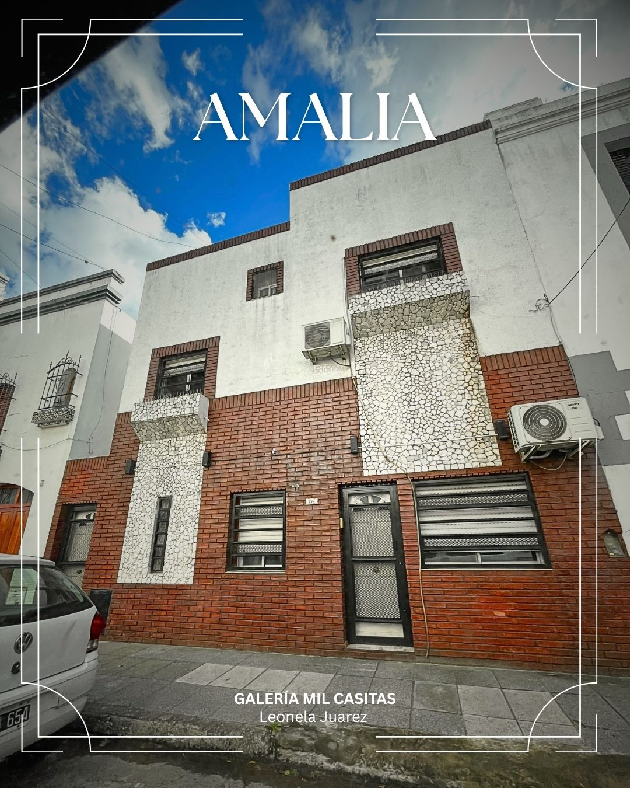
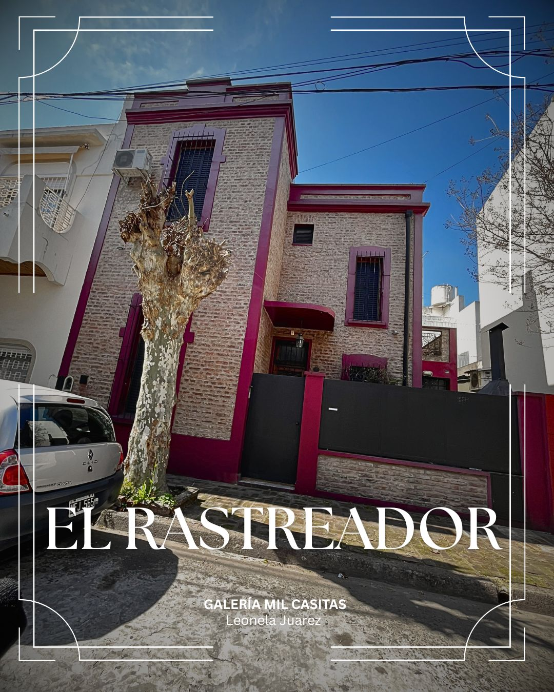

Las Mil Casitas - Conociendo el barrio Liniers
Las Mil Casitas es un histórico y pintoresco conjunto residencial ubicado en el barrio de Liniers, cerca de la Avenida General Paz. Construido a partir de 1922 bajo los lineamientos de la Comisión Nacional de Casas Baratas, este enclave nació como un proyecto habitacional obrero inspirado en la arquitectura del norte de Europa y los Países Bajos.

Origen e Historia
¿Por qué surgió? Surgió a partir de iniciativas legislativas impulsadas para promover el acceso a la vivienda propia a los trabajadores, especialmente a los obreros de los talleres ferroviarios de la zona.
Diseño: Presenta un trazado organizado en forma de pasajes y manzanas estrechas con viviendas gemelas.
Características de las Viviendas
Edificios compactos levantados sobre lotes cuadrados, casas económicas de dos plantas con techos a dos aguas, aberturas altas y alargadas, y pequeños jardines o patios frontales. Conservan un marcado perfil residencial y de fuerte identidad patrimonial.
Recorrido por los Pasajes de la Galería
Pasaje Amalia
Uno de los pasajes más representativos del barrio. Se encuentra escondido en el corazón de la manzana delimitada por Tuyutí, Palmar, Cosquín y Carhué.
Ver pasaje
Pasaje El Rastreador
Homenaje a la figura mítica del rastreador gaucho pampeano popularizada en el Facundo de Sarmiento. Pasaje residencial lindero a la Plaza Sarmiento.
Ver pasaje
Pasaje Los Recuerdos
Testigo de anécdotas populares como el nacimiento de los alfajores Cachafaz y la fundación del tradicional Club Atlético Liniers en la década de 1930.
Ver pasaje